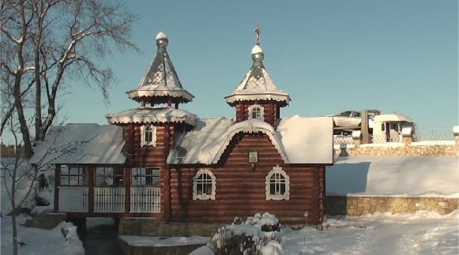
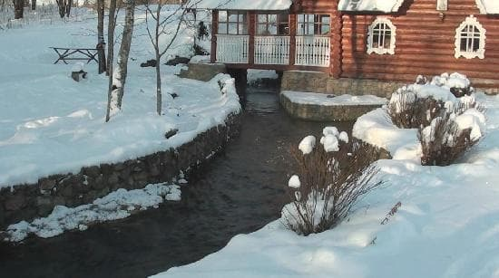
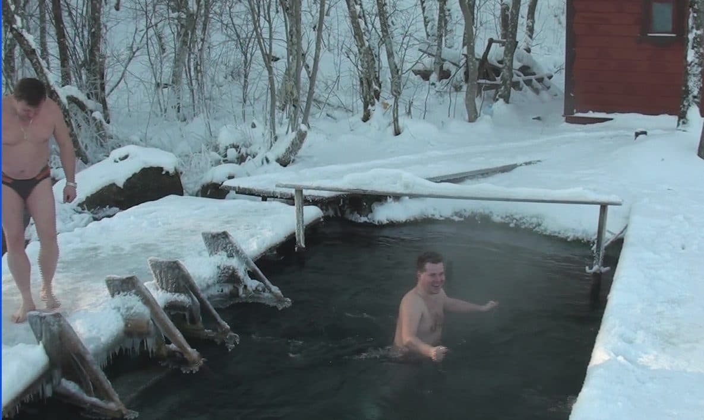

В Волосовском районе, неподалеку от Коложиц есть место с удивительным природным явлением - прямо из под дороги, по которой мчатся фуры, бьет река. Не родник, а настоящая река.
Место известно давно и привлекало внимание, как повод удивиться, для тех кто не знал.
Примерно в 2005 году, его облагородили, поставили часовенку-теремок и освятили.
Не успели это сделать, как по соседству появился грязненький вагончик из которого повалил дымок с запахом шашлыков. Картинка выходила диковатая.
В тот же год источник иссох. Церквушка стоит, объявление информирует о целительных свойствах святой воды, а воды нет.
Шашлыки, разумеется, съехали.
Через год вода вернулась.
Сегодня это выглядит так:


А подземный ключ - исток полноценной местной реки, притока Луги - Хревица.